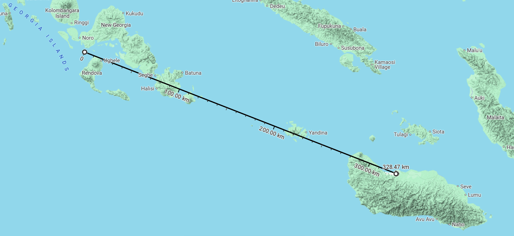
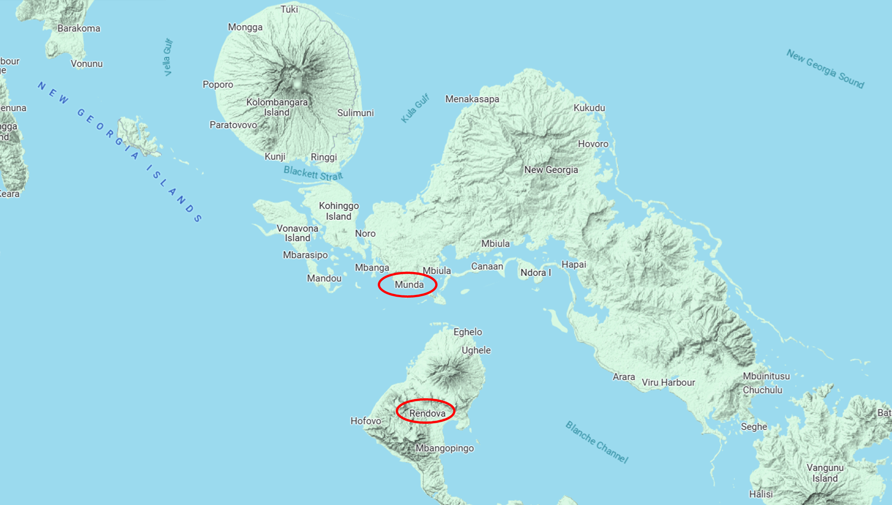
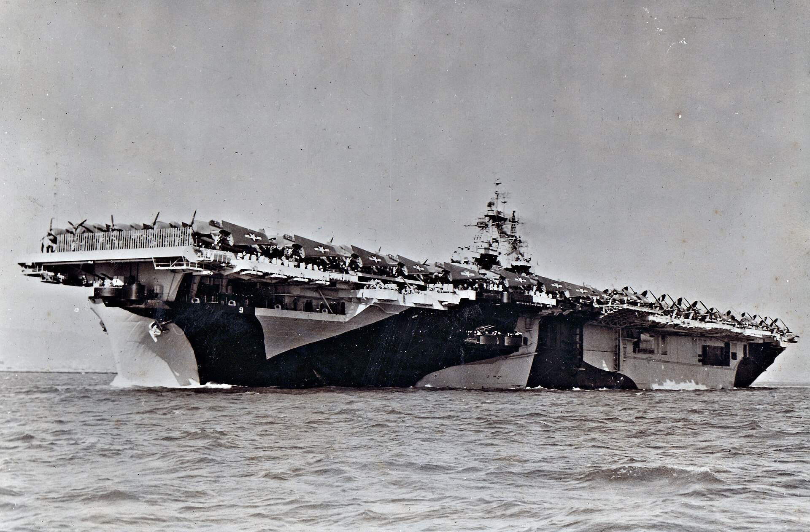
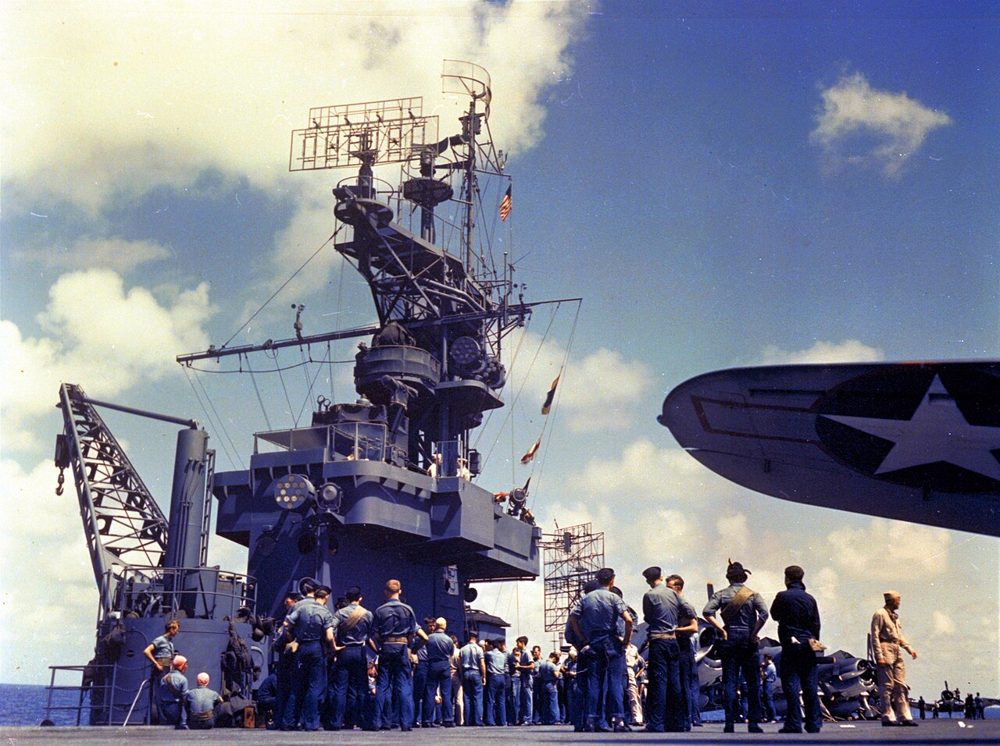
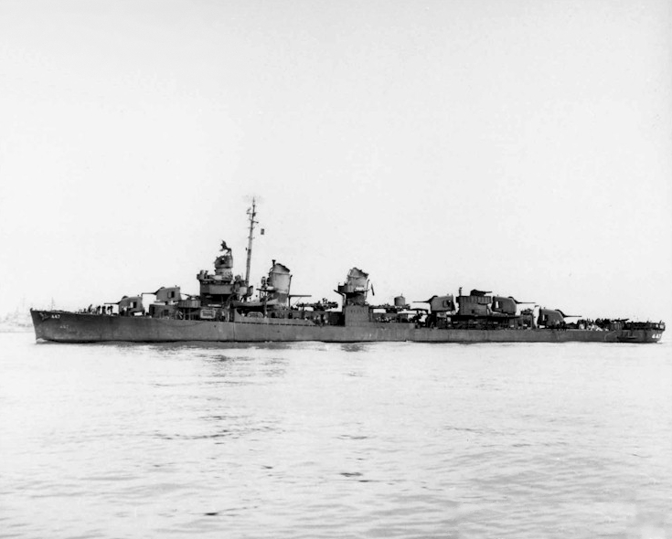
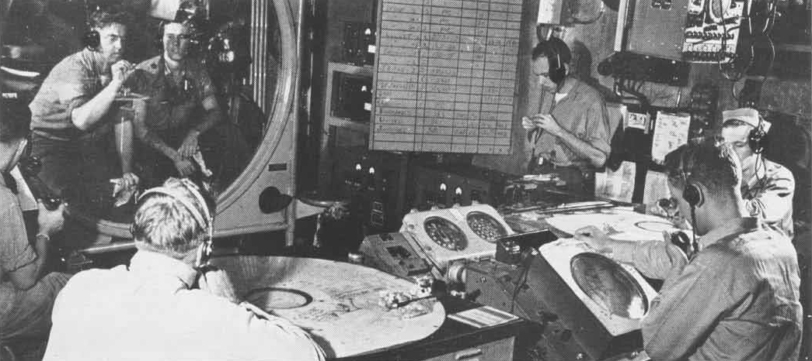
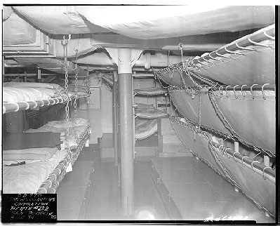

WW2의 IFF 이야기 (1) - 렌도바 섬 상륙 작전
게시: 2024-11-21T06:30:07+09:00
<항모는 그런 곳에 안 간다> 할시 제독이 1943년 1월 말의 렌넬 섬(Rennel Island) 해전에서 순양함 USS Chicago (CA-29)가 격침된 것은 VHF 무전기가 없었기 때문이라며 관련 장비의 대량 생산을 촉구한 일의 배경을 살피느라 그 동안 수정 공진기, 즉 크리스탈 오실레이터(crystal oscillator) 이야기를 계속 했었는데, 이제 그 VHF 무전기가 실전에 사용되는 모습을 볼 순서임. 이제 과달카날을 완전히 장악하고 헨더슨 기지로부터 육군항공대의 전투기들과 폭격기들을 마음껏 사용할 수 있는 기반을 갖춘 미군은 동 솔로몬 제도 중 서쪽 뉴 조지아(New Georgia) 섬으로 진출을 시도. 그러기 위해 가장 먼저 해결해야 했던 것은 뉴 조지아 섬 남쪽 해안가에 위치한 문다(Munda)의 일본군 비행장의 제압 및 점령. 미군이 Munda Point라고 부르던 해변에 위치한 이 비행장은 원래 과달카날 전투가 막바지로 치닫던 1942년 10월부터 일본군이 은밀하게 짓던 것. 일본군은 공사 현장 전체에 그물 같은 케이블을 치고 그 위에 코코넛 나뭇잎들을 덮는 등 위장에 정성을 들였으나, 결국 12월에 미군 항공기에게 그 존재가 발각됨. 이후 과달카날에서 이륙한 B-17 폭격기와 미해군 함정들의 함포 사격 등으로 나름 열심히 두들겼으나 그런 것만으로는 제압이 쉽지 않아 결국 1943년 중순까지도 일본군은 이 문다 비행장을 계속 사용.

(1943년의 문다 비행장의 모습. 이 비행장은 지금도 국제 공항으로 사용 중.) 이 문다 비행장을 점령하기 위해서는 당연히 지상군이 상륙해야 함. 그런데 과달카날에서 문다 포인트까지는 약 330km 떨어져 있어 10노트 정도의 속도를 내는 느린 수송선으로서는 거의 20시간 이상이 걸리는 거리. 병력의 상륙이야 그렇다치고 장기적인 작전을 펼치려면 막대한 보급 물자가 필요한데 왕복 2일이 걸리는 거리에서 제2차, 3차로 보급물자를 실어오기엔 조금 벅참. 그래서 미군이 주목한 것은 문다 비행장 바로 앞에 있는 렌도바(Rendova) 섬. 이 섬을 먼저 점령하고 여기에 미리 보급 물자를 잔뜩 쌓아두자는 것. 아울러, 이 섬은 문다 비행장과 불과 10km 정도 밖에 떨어져 있지 않아 렌도바 섬에 장거리포를 전개시키면 문다 비행장을 효과적으로 제압 가능.

(렌도바 섬과 과달카날의 거리를 보여주는 지도.) 문제는 이 문다 비행장은 물론, 약 730km 떨어진 일본군의 주요 기지 라바울에서 날아올 일본 항공기들의 공격을 어떻게 막아내느냐 하는 것. 당연히 렌도바 상륙군은 대공포를 잔뜩 가져갈 것이고 구축함 등의 지원도 받겠지만, 적 폭격기를 막을 가장 좋은 수단은 역시 전투기. 특히 라바울보다 훨씬 가까운 과달카날의 비행장이 풀 가동되고 있으니 미군이 훨씬 유리. 그러나 그냥 아군 전투기가 렌도바 섬 상공을 초계 비행하는 것만으로 제공권을 가질 수는 없음. 렌도바 섬 상륙부대를 효율적으로 지키려면 렌도바 섬 상공에서 요격을 할 것이 아니라, 적기의 공습을 미리 감지한 뒤 먼 거리까지 마중 나가서 요격해야 했음. 그러자면 역시나 레이더에 의한 조기 경보가 필수.

(문다 포인트와 렌도바 섬 일대의 확대 지도.) 여태까지 해왔듯 레이더와 함재기들을 갖춘 항모들을 전개시키면 되는 것 아닌가? 아님. 이제 막 에섹스급 정규항모 1번함인 USS Essex (CV-9, 3만6천톤, 33노트)가 1943년 5월에야 태평양에 배치될 정도로 아직 미해군은 항모 부족에 시달리고 있었고, 항모가 부족하지 않다고 해도 원래 항모는 적의 항공기지가 있는 육지 근처에는 접근하지 않는 것이 상식 중의 상식이기 때문. 특히나 문다 포인트와 렌도바 섬 인근은 육지로 둘러싸인 좁은 바다라서 항모보고 거기 들어가서 레이더를 돌리라는 것은 죽으라는 말이나 다름 없는 만행. 심지어 이 렌도바 섬 상륙작전은 뉴 조지아 섬 상륙 이전에 물자 집적소 확보 차원의 작은 상륙 작전이었으므로 전체 함대 규모도 작아서 수송선 4척에 보급선 2척, 그리고 구축함 8척이 전부였음. 순양함조차 배정되지 않았음. 그러면 조기 경보기 역할을 해줄 레이더 관제는 누가 해주지?

(사진은 Essex급 항모들의 nameship인 USS Essex (CV-9). 현재 미해군 항공모함 이름은 이미 사망한 대통령 이름을 따서 짓는 것이 대세. 그러나 아직 건조 시작하지 않은 USS Doris Miller (CVN-81)처럼 명예를 기릴 만한 개인의 이름을 따기도 함. 근데 WW2 기간 중 쏟아져 나온 24척의 Essex급 항모들의 이름은 대체 무엇을 딴 것일까? 원래는 전에 존재하던 미해군 초창기의 군함 이름을 그대로 재사용했는데 (CV-9 Essex, CV-10 Yorktown 등), 나중에는 딱히 원칙도 없이 마구잡이로 이름을 지음. USS Shangri-La (CV-38) 같은 경우, 도꾜를 공습한 둘리툴 폭격대가 어디에서 이륙했는지를 묻는 기자들의 질문에 웃으며 (전설 속의 히말라야 산속 마을인) '샹그릴라?'라고 대답한 루스벨트 대통령의 답변을 기념하여 그렇게 명명. 가장 가관은 USS Hancock (CV-19). 이건 '만약 함명을 우리 회사 이름으로 지어준다면 전쟁 채권 발행에 적극 협조하겠다는 John Hancock 생명보험사의 제안에 따라 지어진 것. 물론 미국 건국의 아버지들(founding fathers) 중에 하필 John Hancock이 있었기 때문에 공식적으로는 그 사람 이름을 땄다고 넘어갈 수 있었던 것. John Hancock사는 지금도 영업 중.) <깡통배의 비애> 아직 조기 경보기가 없던 시절, 위험한 섬들로 둘러싸인 좁은 해역에 들어가 레이더 경보함 역할을 해줄 군함이 갖춘 조건은 딱 2가지. 하나는 대공 레이더를 가지고 있어야 한다는 것이고, 다른 하나는 일이 잘못 되어 격침되더라도 덜 아까운 싸구려 군함이어야 한다는 것. 그 조건에 맞는 군함은 결국 구축함. 1943년 6월, 렌도바 상륙작전을 기획할 즈음에는 이미 SC-2 레이더가 대량 생산에 들어갔는데, 초창기 CXAM 레이더의 경우 전체 무게가 2.3톤, 그 중 안테나 무게만 0.5톤이었으나 SC-2 레이더는 전체 무게가 1.4톤 정도로 이제 상당히 경량화되었음. 당연히 SC-2 레이더는 순양함은 물론 구축함에도 장착되었음.

(이 사진은 경항모 USS Cowpens (CVL-25, 1만2천톤, 32노트)에 장착된 SC-2 레이더의 모습. SC-2 레이더는 여전히 1.5m 길이의 비교적 긴 파장을 사용했으나, 이젠 안테나를 손으로 그때그때 이리저리 돌리는 것이 아니라 요즘 레이더처럼 전기 모터로 1분에 5번 일정한 속도로 자동 회전했고, 모니터 스코프도 기존처럼 A-scope가 아니라 우리에게 익숙한 PPI scope를 사용. 갈퀴처럼 생긴 것은 레이더가 아니라 함재기들이 귀환할 때 모함을 찾도록 전파 신호를 발신하는 YE-ZB 'Hayrake' Radio Navigation 안테나 (https://nasica1.tistory.com/403 참조)이고, SC-2 레이더 안테나는 그 왼쪽에 달린 커다란 사각형 철망 같은 것.) 특히 렌도바 상륙에 배정된 구축함 USS Jenkins (DD-447, 2100톤, 36노트)는 약 1년전부터 나오기 시작한 Fletcher급 구축함으로서, 설계될 때부터 제대로 된 CIC (Combat Information Center)를 갖춘 함정. 비록 순양함보다 훨씬 작은 함정이었지만 원래 설계에 고려되지 않은 CIC를 도중에 억지로 만든 순양함의 CIC보다 훨씬 더 좋은 조건의 CIC를 갖출 수 있었음. 더 좋은 CIC를 구성하는 조건에는 작도를 할 수 있는 넓은 공간과 무전기 등도 있었지만, 그 속에서 일하는 사람들이 특히 좋은 점으로 뽑았던 것은 CIC에서 일하지 않지만 호기심은 많았던 장교들이나 부사관들이 괜히 찾아와 가뜩이나 좁은 공간에서 더욱 정신 사납게 하던 일이 더 이상 없도록 외부인들이 들어오기 힘든 공간에 위치했다는 점.

(USS Jenkins (DD-447)의 모습. 1942년 6월 진수되고 불과 1달만에 취역. 전쟁 끝까지 살아남았으며, 한국전에도 참전.)

(이 사진은 경항모 USS Independence (CVL-22, 1만5천톤, 31노트)의 CIC. 원래 CIC는 Combat Operations Center, 즉 COC로 불렸음. 이렇게 이름을 붙인 것은 바로 니미츠 제독. 그러나 니미츠 제독보다 더 선임인 제독들이 그 명칭에 강한 반감을 가짐. "해군이면 당연히 함장이 지휘하는 함교가 Operation Center이지 무슨 이상한 브라운관과 지도 같은 것만 들여다보는 괴짜들이 앉아있는 컴컴한 방이 작전 센터냐?"라는 것. 사소한 이름 가지고 선배들과 싸우고 싶지 않았던 니미츠 제독이 그냥 Operation (작전) 대신 Information (정보)로 이름을 바꾸기로 했다고.) 문제는 구축함의 CIC에서는 레이더로 적기와 적함의 위치 추적만 할 뿐, 아군 전투기를 관제하는 전투기 관제사 (FDO, fighter directing officer)는 없다는 것. 그거야 해결이 간단. 과달카날에는 이미 다수의 지상 설치 레이더들과 함께 전투기 관제사들이 꽤 있었으므로 그들을 태우고 가면 됨. 실제로 젠킨스 호는 과달카날에서 4명의 관제사와 2명의 조수들을 싣고 렌도바로 향함. 이들은 과달카날에서 이륙하는 전투기들을 매우 솜씨 있게 통제하여 렌도바 상륙 작전 때 매우 효율적인 대공 방어를 수행. 대부분의 일본기들은 원거리에서 미리 요격 되었고, 몇몇 일본 뇌격기들이 요격기들을 뿌리치고 상륙 함대가 있는 곳까지 뚫고 들어왔으나 대부분 구축함들의 대공포로 격추됨. 이때 워낙 성과가 좋았으므로, 이후 대부분의 상륙 작전에서는 구축함이 전투기 관제를 수행하는 조기 경보기 역할을 수행. 다만 이렇게 생각하지 않던 임무를 수행하게 되면 당연히 문제가 생겼는데, 몇몇 낡은 구축함들은 전투기들과 직접 교신이 가능한 최신 무전기를 갖추고 있지 않았음. 그 문제도 관제사팀이 구축함에 승선할 때 아예 최신 무전기와 무전병은 물론, 수리 기술병까지 함께 데리고 탐으로써 간단히 해결. 그러나 결국 해결이 곤란했던 문제는... 바로 공간. 가뜩이나 좁은 구축함에 가외의 인원들이 우르르 탔으니 숙소가 부족했던 것. 이들은 구축함의 기존 수병들의 침대를 빌려 쓰거나, 영 상황이 좋지 않은 경우엔 장교 식당 바닥, 심지어 복도에서 자야 했다고.

(현대의 Nimitz급 항모조차 승조원들 잠자리가 넓지 않은데 사진 속 WW2 당시 구축함의 사정이야... 순양함만 해도 어느 정도 두께의 장갑판을 갖추고 있어서 방호력이 어느 정도 있었으나 구축함은 정말 장갑판 전혀 없이 얇은 철판 뿐인지라 구축함 승조원들은 스스로를 tin can sailor 라고 불렀음.)